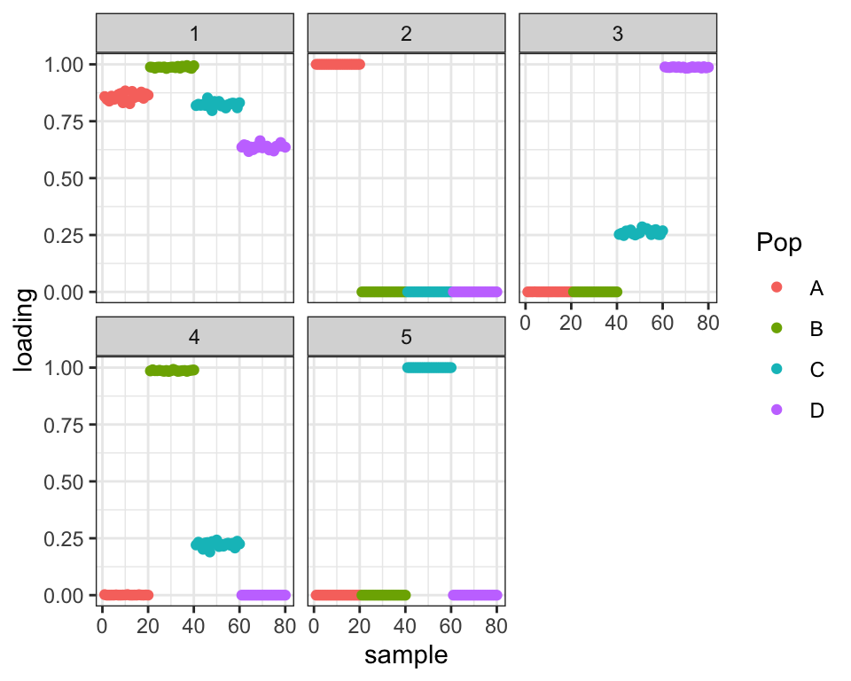
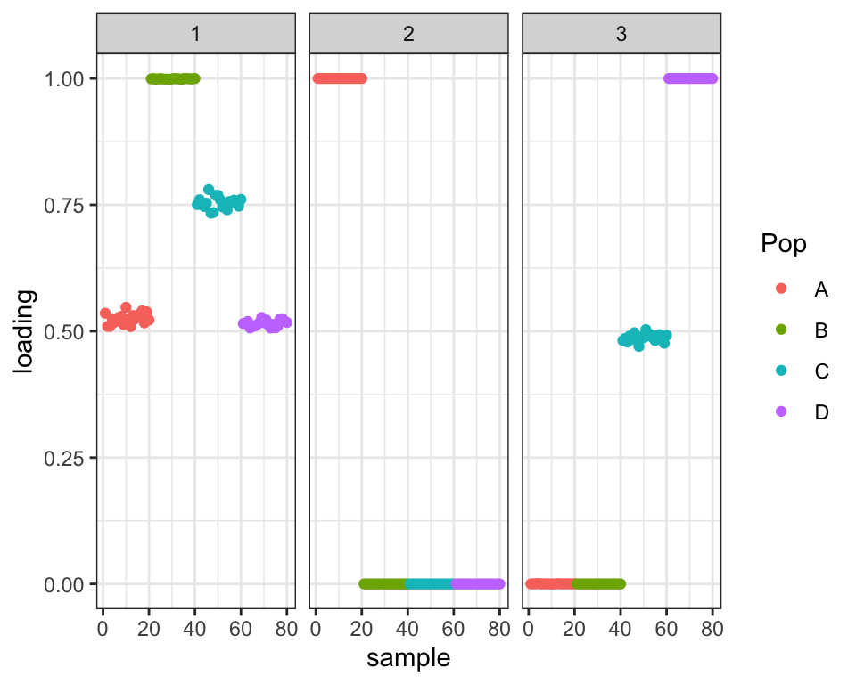
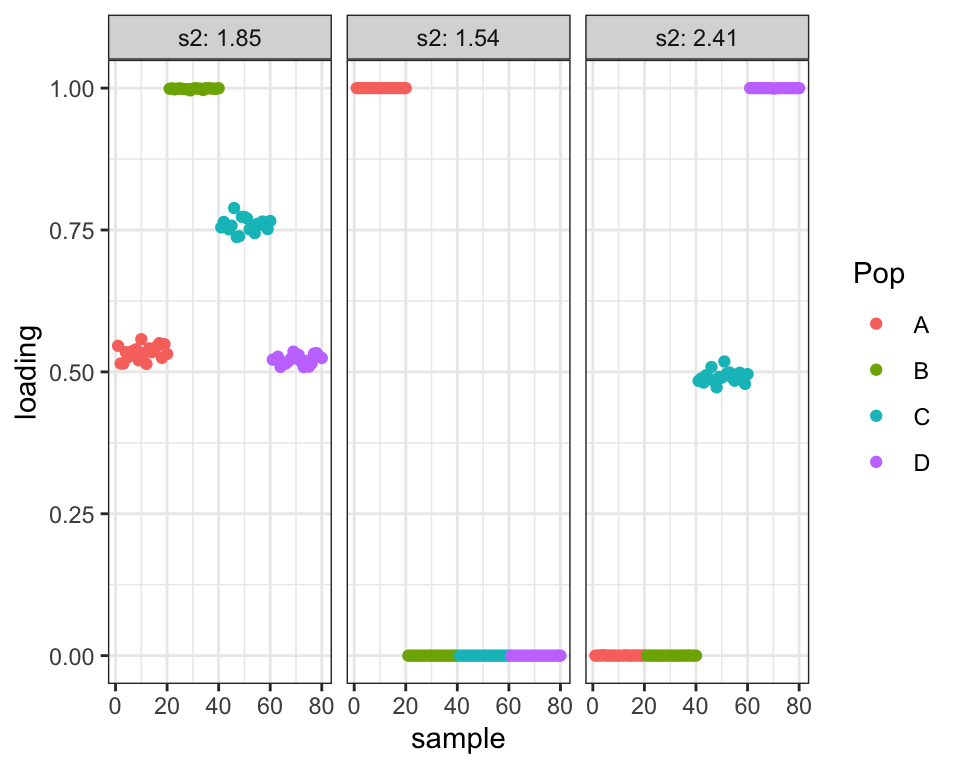
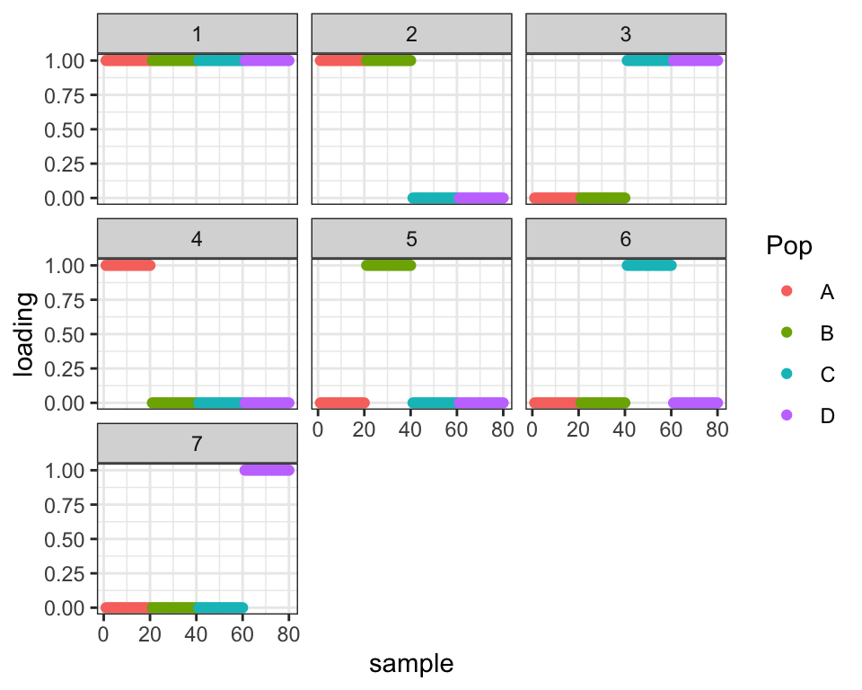
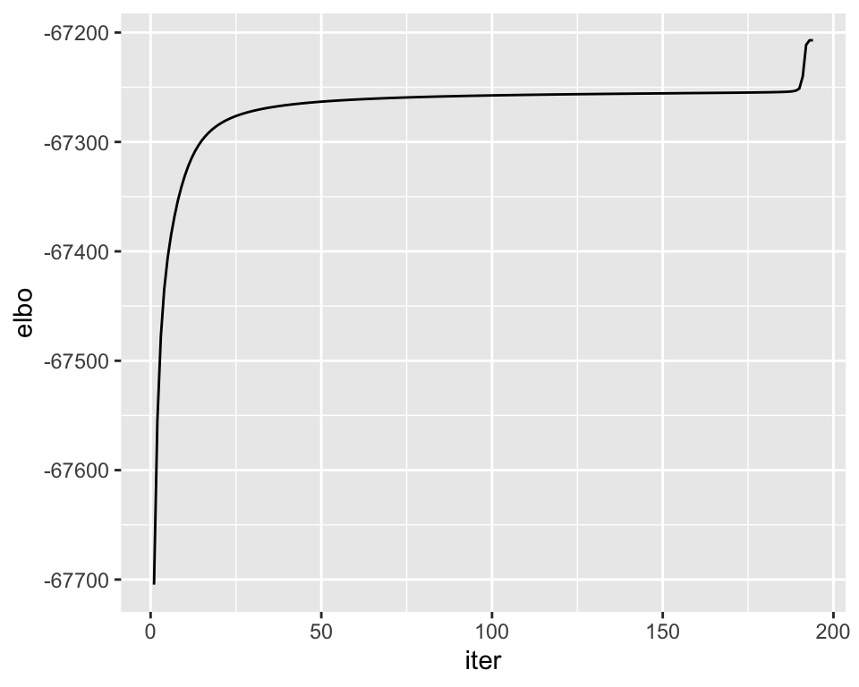
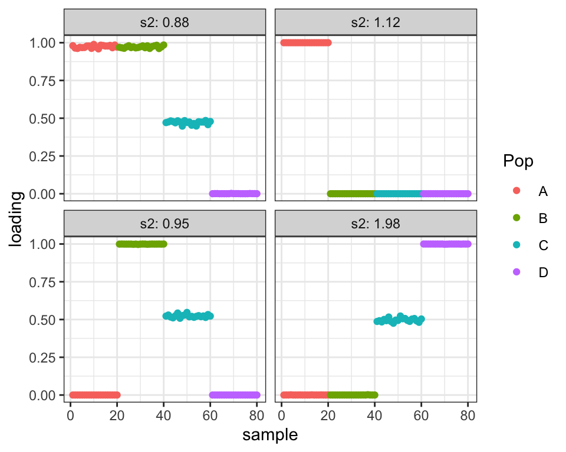
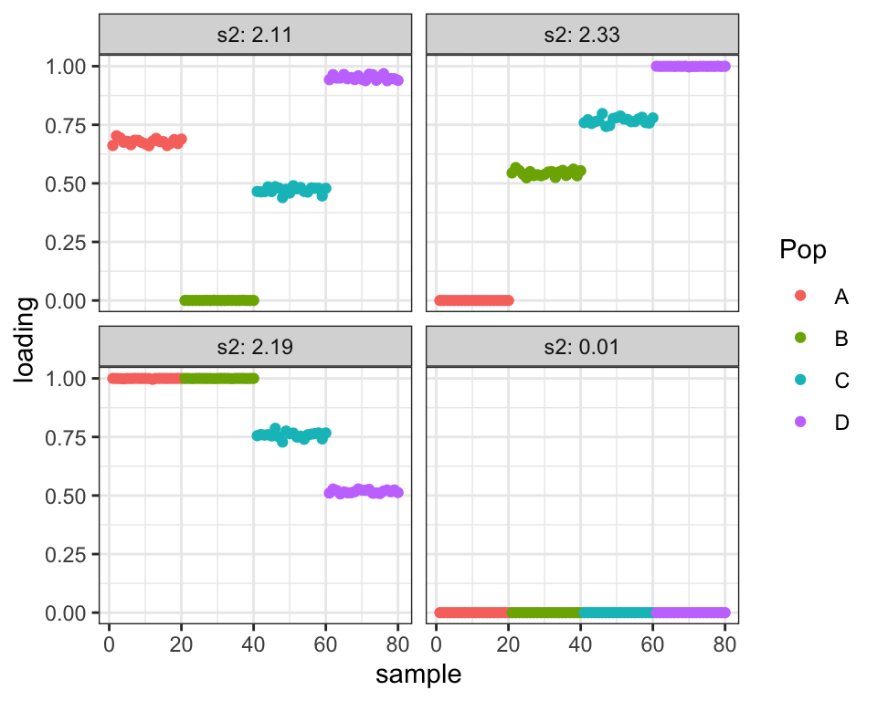
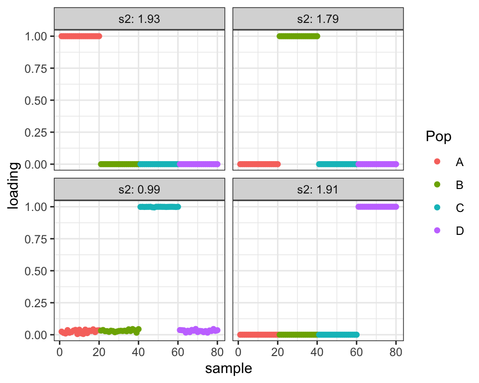

Branching + admixture simulation: effect of initialization
Jason Willwerscheid
1/10/2020
Last updated: 2020-01-14
Checks: 6 0
Knit directory: drift-workflow/analysis/
This reproducible R Markdown analysis was created with workflowr (version 1.2.0). The Report tab describes the reproducibility checks that were applied when the results were created. The Past versions tab lists the development history.
Great! Since the R Markdown file has been committed to the Git repository, you know the exact version of the code that produced these results.
Great job! The global environment was empty. Objects defined in the global environment can affect the analysis in your R Markdown file in unknown ways. For reproduciblity it’s best to always run the code in an empty environment.
The command set.seed(20190211) was run prior to running the code in the R Markdown file. Setting a seed ensures that any results that rely on randomness, e.g. subsampling or permutations, are reproducible.
Great job! Recording the operating system, R version, and package versions is critical for reproducibility.
Nice! There were no cached chunks for this analysis, so you can be confident that you successfully produced the results during this run.
Great! You are using Git for version control. Tracking code development and connecting the code version to the results is critical for reproducibility. The version displayed above was the version of the Git repository at the time these results were generated.
Note that you need to be careful to ensure that all relevant files for the analysis have been committed to Git prior to generating the results (you can use wflow_publish or wflow_git_commit). workflowr only checks the R Markdown file, but you know if there are other scripts or data files that it depends on. Below is the status of the Git repository when the results were generated:
Ignored files:
Ignored: .DS_Store
Ignored: .Rhistory
Ignored: .Rproj.user/
Ignored: docs/.DS_Store
Ignored: docs/assets/.DS_Store
Untracked files:
Untracked: analysis/admix_sim3.Rmd
Unstaged changes:
Modified: analysis/admix_sim2.Rmd
Modified: drift-workflow.Rproj
Note that any generated files, e.g. HTML, png, CSS, etc., are not included in this status report because it is ok for generated content to have uncommitted changes.
These are the previous versions of the R Markdown and HTML files. If you’ve configured a remote Git repository (see ?wflow_git_remote), click on the hyperlinks in the table below to view them.
| File | Version | Author | Date | Message |
|---|---|---|---|---|
| Rmd | 5657aa2 | Jason Willwerscheid | 2020-01-14 | wflow_publish(“analysis/admix_sim4.Rmd”) |
suppressMessages({
library(flashier)
library(drift.alpha)
library(ggplot2)
library(reshape2)
library(tidyverse)
})In this admixture simulation, I introduce a branching event. Namely, I allow two populations to drift until time \(t\), at which point the first population diverges into Populations 1 and 2. The three populations then each experience independent drift until time \(2t\), at which point Populations 2 and 4 admix in equal proportions:

| Version | Author | Date |
|---|---|---|
| 898bc42 | Jason Willwerscheid | 2020-01-10 |
The covariance matrix appears as follows:
set.seed(666)
simple.admix <- admix_graph_sim(n_per_pop = 20, p = 1000,
c1 = 2, c2 = 1, c3 = 0, c4 = 0,
c5 = 1, c6 = 1, c7 = 0,
w = 0.5, sigma_e = sqrt(0.25))
plot_cov(simple.admix$covmat, as.is = TRUE)
Flash initialization (greedy)
Initial values
fl <- flash(simple.admix$Y, prior.family = c(prior.bimodal(), prior.normal()))#> Adding factor 1 to flash object...
#> Adding factor 2 to flash object...
#> Adding factor 3 to flash object...
#> Adding factor 4 to flash object...
#> Adding factor 5 to flash object...
#> Adding factor 6 to flash object...
#> Adding factor 7 to flash object...
#> Factor doesn't significantly increase objective and won't be added.
#> Wrapping up...
#> Done.
#> Nullchecking 6 factors...
#> Done.labs <- rep(c("A", "B", "C", "D"), each = 20)
plot_loadings(fl$flash.fit$EF[[1]], labs)
Drift results
drift.flg <- drift(init_from_flash(fl), miniter = 2, maxiter = 500, tol = 0.01, verbose = TRUE)#> 1 : -69255.571
#> 2 : -69170.891
#> 3 : -69165.938
#> 4 : -69161.453
#> 5 : -69158.583
#> 6 : -69155.866
#> 7 : -69152.961
#> 8 : -69149.989
#> 9 : -69147.034
#> 10 : -69144.036
#> 11 : -69140.967
#> 12 : -69137.609
#> 13 : -69133.128
#> 14 : -69126.775
#> 15 : -69119.614
#> 16 : -69113.566
#> 17 : -69108.082
#> 18 : -69102.343
#> 19 : -69094.113
#> 20 : -69079.359
#> 21 : -69062.231
#> 22 : -69046.025
#> 23 : -69040.258
#> 24 : -69036.339
#> 25 : -69032.828
#> 26 : -69029.621
#> 27 : -69026.684
#> 28 : -69023.986
#> 29 : -69021.500
#> 30 : -69019.192
#> 31 : -69017.033
#> 32 : -69014.996
#> 33 : -69013.057
#> 34 : -69011.198
#> 35 : -69009.406
#> 36 : -69007.671
#> 37 : -69005.988
#> 38 : -69004.352
#> 39 : -69002.764
#> 40 : -69001.223
#> 41 : -68999.729
#> 42 : -68998.283
#> 43 : -68996.886
#> 44 : -68995.538
#> 45 : -68994.238
#> 46 : -68992.987
#> 47 : -68991.783
#> 48 : -68990.624
#> 49 : -68989.510
#> 50 : -68988.437
#> 51 : -68987.405
#> 52 : -68986.410
#> 53 : -68985.451
#> 54 : -68984.526
#> 55 : -68983.633
#> 56 : -68982.769
#> 57 : -68981.933
#> 58 : -68981.123
#> 59 : -68980.337
#> 60 : -68979.573
#> 61 : -68978.831
#> 62 : -68978.109
#> 63 : -68977.405
#> 64 : -68976.718
#> 65 : -68976.047
#> 66 : -68975.390
#> 67 : -68974.747
#> 68 : -68974.116
#> 69 : -68973.497
#> 70 : -68972.889
#> 71 : -68972.289
#> 72 : -68971.699
#> 73 : -68971.116
#> 74 : -68970.539
#> 75 : -68969.969
#> 76 : -68969.403
#> 77 : -68968.842
#> 78 : -68968.284
#> 79 : -68967.727
#> 80 : -68967.173
#> 81 : -68966.619
#> 82 : -68966.064
#> 83 : -68965.509
#> 84 : -68964.952
#> 85 : -68964.392
#> 86 : -68963.825
#> 87 : -68963.232
#> 88 : -68962.528
#> 89 : -68961.811
#> 90 : -68961.142
#> 91 : -68960.217
#> 92 : -68958.890
#> 93 : -68957.666
#> 94 : -68956.653
#> 95 : -68955.882
#> 96 : -68955.036
#> 97 : -68954.283
#> 98 : -68953.570
#> 99 : -68952.620
#> 100 : -68951.031
#> 101 : -68949.109
#> 102 : -68946.698
#> 103 : -68944.965
#> 104 : -68943.870
#> 105 : -68942.894
#> 106 : -68941.945
#> 107 : -68941.033
#> 108 : -68940.162
#> 109 : -68939.382
#> 110 : -68938.561
#> 111 : -68937.370
#> 112 : -68936.341
#> 113 : -68935.026
#> 114 : -68933.543
#> 115 : -68931.563
#> 116 : -68928.743
#> 117 : -68922.284
#> 118 : -68916.462
#> 119 : -68914.342
#> 120 : -68912.908
#> 121 : -68911.813
#> 122 : -68911.709
#> 123 : -68911.607
#> 124 : -68911.506
#> 125 : -68911.405
#> 126 : -68911.304
#> 127 : -68911.204
#> 128 : -68911.104
#> 129 : -68911.003
#> 130 : -68910.903
#> 131 : -68910.803
#> 132 : -68910.703
#> 133 : -68910.604
#> 134 : -68910.504
#> 135 : -68910.403
#> 136 : -68910.303
#> 137 : -68910.203
#> 138 : -68910.102
#> 139 : -68910.002
#> 140 : -68909.901
#> 141 : -68909.799
#> 142 : -68909.698
#> 143 : -68909.596
#> 144 : -68909.494
#> 145 : -68909.391
#> 146 : -68909.288
#> 147 : -68909.184
#> 148 : -68909.080
#> 149 : -68908.975
#> 150 : -68908.870
#> 151 : -68908.764
#> 152 : -68908.658
#> 153 : -68908.550
#> 154 : -68908.443
#> 155 : -68908.334
#> 156 : -68908.225
#> 157 : -68908.114
#> 158 : -68908.004
#> 159 : -68907.892
#> 160 : -68907.779
#> 161 : -68907.666
#> 162 : -68907.551
#> 163 : -68907.436
#> 164 : -68907.320
#> 165 : -68907.202
#> 166 : -68907.084
#> 167 : -68906.965
#> 168 : -68906.844
#> 169 : -68906.723
#> 170 : -68906.601
#> 171 : -68906.477
#> 172 : -68906.352
#> 173 : -68906.226
#> 174 : -68906.099
#> 175 : -68905.971
#> 176 : -68905.841
#> 177 : -68905.710
#> 178 : -68905.578
#> 179 : -68905.444
#> 180 : -68905.309
#> 181 : -68905.172
#> 182 : -68905.034
#> 183 : -68904.893
#> 184 : -68904.750
#> 185 : -68904.603
#> 186 : -68904.453
#> 187 : -68904.295
#> 188 : -68904.125
#> 189 : -68903.931
#> 190 : -68903.683
#> 191 : -68903.315
#> 192 : -68902.724
#> 193 : -68901.881
#> 194 : -68900.900
#> 195 : -68899.914
#> 196 : -68899.198
#> 197 : -68898.632
#> 198 : -68898.167
#> 199 : -68897.772
#> 200 : -68897.428
#> 201 : -68897.121
#> 202 : -68896.840
#> 203 : -68896.578
#> 204 : -68896.330
#> 205 : -68896.092
#> 206 : -68895.861
#> 207 : -68895.635
#> 208 : -68895.413
#> 209 : -68895.194
#> 210 : -68894.976
#> 211 : -68894.760
#> 212 : -68894.545
#> 213 : -68894.329
#> 214 : -68894.095
#> 215 : -68893.757
#> 216 : -68893.294
#> 217 : -68892.969
#> 218 : -68892.681
#> 219 : -68892.407
#> 220 : -68892.140
#> 221 : -68891.876
#> 222 : -68891.608
#> 223 : -68891.335
#> 224 : -68891.048
#> 225 : -68890.722
#> 226 : -68890.248
#> 227 : -68889.602
#> 228 : -68889.090
#> 229 : -68888.519
#> 230 : -68887.442
#> 231 : -68886.381
#> 232 : -68885.521
#> 233 : -68884.487
#> 234 : -68883.330
#> 235 : -68881.664
#> 236 : -68879.892
#> 237 : -68878.744
#> 238 : -68877.731
#> 239 : -68876.410
#> 240 : -68875.313
#> 241 : -68874.614
#> 242 : -68874.168
#> 243 : -68873.768
#> 244 : -68873.325
#> 245 : -68872.879
#> 246 : -68872.431
#> 247 : -68872.236
#> 248 : -68872.135
#> 249 : -68872.068
#> 250 : -68872.018
#> 251 : -68871.975
#> 252 : -68871.937
#> 253 : -68871.899
#> 254 : -68871.858
#> 255 : -68871.812
#> 256 : -68871.756
#> 257 : -68871.682
#> 258 : -68871.589
#> 259 : -68871.485
#> 260 : -68871.395
#> 261 : -68871.337
#> 262 : -68871.302
#> 263 : -68871.280
#> 264 : -68871.262
#> 265 : -68871.246
#> 266 : -68871.232
#> 267 : -68871.219
#> 268 : -68871.207
#> 269 : -68871.195
#> 270 : -68871.184
#> 271 : -68871.173
#> 272 : -68871.163
#> 273 : -68871.153drift.flg[c("elbo", "KL_l", "KL_f")]#> $elbo
#> [1] -68871.15
#>
#> $KL_l
#> [1] -87.69229 -45.12987 -45.12987 -55.86939 -45.12987 -46.08242
#>
#> $KL_f
#> [1] -10881.27
lblr <- paste("s2:", round(drift.flg$prior_s2, 2))
names(lblr) <- 1:length(drift.flg$prior_s2)
lblr <- as_labeller(lblr)
plot_loadings(drift.flg$EL, labs, lblr)plot_cov(drift.flg$EL * rep(sqrt(drift.flg$prior_s2), each = 80))
Flash initialization (backfit)
Initial values
fl <- fl %>% flash.backfit() %>% flash.nullcheck(remove = TRUE)#> Backfitting 6 factors (tolerance: 1.19e-03)...
#> Difference between iterations is within 1.0e+03...
#> Difference between iterations is within 1.0e+02...
#> Difference between iterations is within 1.0e+01...
#> Difference between iterations is within 1.0e+00...
#> Difference between iterations is within 1.0e-01...
#> Difference between iterations is within 1.0e-02...
#> Difference between iterations is within 1.0e-03...
#> Wrapping up...
#> Done.
#> Nullchecking 6 factors...
#> Wrapping up...
#> Done.plot_loadings(fl$flash.fit$EF[[1]], labs)
Drift results
drift.flb <- drift(init_from_flash(fl), miniter = 2, maxiter = 500, tol = 0.01, verbose = TRUE)#> 1 : -69044.935
#> 2 : -69044.118
#> 3 : -69043.717
#> 4 : -69043.500
#> 5 : -69043.377
#> 6 : -69043.303
#> 7 : -69043.258
#> 8 : -69043.230
#> 9 : -69043.212
#> 10 : -69043.201
#> 11 : -69043.193drift.flb[c("elbo", "KL_l", "KL_f")]#> $elbo
#> [1] -69043.19
#>
#> $KL_l
#> [1] -143.76633 -48.17541 -45.12987 -126.59420
#>
#> $KL_f
#> [1] -10903.19
lblr <- paste("s2:", round(drift.flb$prior_s2, 2))
names(lblr) <- 1:length(drift.flb$prior_s2)
lblr <- as_labeller(lblr)
plot_loadings(drift.flb$EL, labs, lblr)plot_cov(drift.flb$EL * rep(sqrt(drift.flb$prior_s2), each = 80))
Initialization from hclust
Initial values
init <- init_using_hclust(simple.admix$Y, k = 4)
plot_loadings(init$EL, labs)
Drift results
drift.hclust <- drift(init, miniter = 2, maxiter = 500, tol = 0.01, verbose = TRUE)#> 1 : -69614.043
#> 2 : -69249.168
#> 3 : -69140.217
#> 4 : -69065.410
#> 5 : -69010.993
#> 6 : -68971.780
#> 7 : -68943.314
#> 8 : -68922.112
#> 9 : -68905.789
#> 10 : -68892.833
#> 11 : -68882.298
#> 12 : -68873.570
#> 13 : -68866.230
#> 14 : -68859.979
#> 15 : -68854.596
#> 16 : -68849.916
#> 17 : -68845.813
#> 18 : -68842.187
#> 19 : -68838.961
#> 20 : -68836.073
#> 21 : -68833.474
#> 22 : -68831.122
#> 23 : -68828.984
#> 24 : -68827.033
#> 25 : -68825.245
#> 26 : -68823.601
#> 27 : -68822.084
#> 28 : -68820.680
#> 29 : -68819.377
#> 30 : -68818.164
#> 31 : -68817.033
#> 32 : -68815.976
#> 33 : -68814.985
#> 34 : -68814.054
#> 35 : -68813.179
#> 36 : -68812.354
#> 37 : -68811.575
#> 38 : -68810.839
#> 39 : -68810.142
#> 40 : -68818.010drift.hclust[c("elbo", "KL_l", "KL_f")]#> $elbo
#> [1] -68818.01
#>
#> $KL_l
#> [1] -8.528778 -45.129874 -46.084319 -45.129874 -45.129874 -45.129874
#>
#> $KL_f
#> [1] -10808.13
lblr <- paste("s2:", round(drift.hclust$prior_s2, 2))
names(lblr) <- 1:length(drift.hclust$prior_s2)
lblr <- as_labeller(lblr)
plot_loadings(drift.hclust$EL, labs, lblr)
plot_cov(drift.hclust$EL * rep(sqrt(drift.hclust$prior_s2), each = 80))Initialization from “true” solution
Initial values
init <- init_using_hclust(simple.admix$Y, k = 4, as_tree = FALSE)
init$EL <- cbind(c(rep(1, 40), rep(0.5, 20), rep(0, 20)),
c(rep(1, 20), rep(0, 60)),
c(rep(0, 20), rep(1, 20), rep(0.5, 20), rep(0, 20)),
c(rep(0, 40), rep(0.5, 20), rep(1, 20)))
init$EL2 <- init$EL^2
plot_loadings(init$EL, labs)
Drift results
drift.true <- drift(init, miniter = 2, maxiter = 500, tol = 0.01, verbose = TRUE)#> 1 : -120089.866
#> 2 : -107227.585
#> 3 : -74748.500
#> 4 : -70284.923
#> 5 : -70235.185
#> 6 : -70220.836
#> 7 : -70207.005
#> 8 : -70194.904
#> 9 : -70182.031
#> 10 : -70170.970
#> 11 : -70162.331
#> 12 : -70154.576
#> 13 : -70147.370
#> 14 : -70140.948
#> 15 : -70135.438
#> 16 : -70130.591
#> 17 : -70125.191
#> 18 : -70120.219
#> 19 : -70115.300
#> 20 : -70109.738
#> 21 : -70103.267
#> 22 : -70094.217
#> 23 : -70085.812
#> 24 : -70079.121
#> 25 : -70072.600
#> 26 : -70065.240
#> 27 : -70056.950
#> 28 : -70052.234
#> 29 : -70048.650
#> 30 : -70045.543
#> 31 : -70042.388
#> 32 : -70038.637
#> 33 : -70034.891
#> 34 : -70031.351
#> 35 : -70027.434
#> 36 : -70023.375
#> 37 : -70019.566
#> 38 : -70016.012
#> 39 : -70012.630
#> 40 : -70008.768
#> 41 : -70005.143
#> 42 : -70001.749
#> 43 : -69998.601
#> 44 : -69995.641
#> 45 : -69992.502
#> 46 : -69989.250
#> 47 : -69986.180
#> 48 : -69983.303
#> 49 : -69980.624
#> 50 : -69978.146
#> 51 : -69975.864
#> 52 : -69973.772
#> 53 : -69971.864
#> 54 : -69970.136
#> 55 : -69968.546
#> 56 : -69967.014
#> 57 : -69965.442
#> 58 : -69963.759
#> 59 : -69961.932
#> 60 : -69960.049
#> 61 : -69957.845
#> 62 : -69955.193
#> 63 : -69952.634
#> 64 : -69950.147
#> 65 : -69947.735
#> 66 : -69945.403
#> 67 : -69943.157
#> 68 : -69941.003
#> 69 : -69938.951
#> 70 : -69937.010
#> 71 : -69935.191
#> 72 : -69933.502
#> 73 : -69931.953
#> 74 : -69930.548
#> 75 : -69929.289
#> 76 : -69928.172
#> 77 : -69927.101
#> 78 : -69925.930
#> 79 : -69924.679
#> 80 : -69923.518
#> 81 : -69922.440
#> 82 : -69921.441
#> 83 : -69920.512
#> 84 : -69919.648
#> 85 : -69918.841
#> 86 : -69918.088
#> 87 : -69917.333
#> 88 : -69916.149
#> 89 : -69914.970
#> 90 : -69913.764
#> 91 : -69912.670
#> 92 : -69911.665
#> 93 : -69910.733
#> 94 : -69909.855
#> 95 : -69908.990
#> 96 : -69908.074
#> 97 : -69907.082
#> 98 : -69905.946
#> 99 : -69904.725
#> 100 : -69903.529
#> 101 : -69902.358
#> 102 : -69901.214
#> 103 : -69900.098
#> 104 : -69899.012
#> 105 : -69897.960
#> 106 : -69896.946
#> 107 : -69895.972
#> 108 : -69895.044
#> 109 : -69894.166
#> 110 : -69893.343
#> 111 : -69892.578
#> 112 : -69891.875
#> 113 : -69891.237
#> 114 : -69890.663
#> 115 : -69890.153
#> 116 : -69889.705
#> 117 : -69889.316
#> 118 : -69888.947
#> 119 : -69888.516
#> 120 : -69887.965
#> 121 : -69887.394
#> 122 : -69886.846
#> 123 : -69886.318
#> 124 : -69885.810
#> 125 : -69885.321
#> 126 : -69884.850
#> 127 : -69884.396
#> 128 : -69883.961
#> 129 : -69883.545
#> 130 : -69883.148
#> 131 : -69882.770
#> 132 : -69882.414
#> 133 : -69882.079
#> 134 : -69881.768
#> 135 : -69881.480
#> 136 : -69881.216
#> 137 : -69880.976
#> 138 : -69880.760
#> 139 : -69880.566
#> 140 : -69880.394
#> 141 : -69880.241
#> 142 : -69880.105
#> 143 : -69879.983
#> 144 : -69879.874
#> 145 : -69879.775
#> 146 : -69879.685
#> 147 : -69879.600
#> 148 : -69879.522
#> 149 : -69879.447
#> 150 : -69879.375
#> 151 : -69879.306
#> 152 : -69879.240
#> 153 : -69879.175
#> 154 : -69879.111
#> 155 : -69879.049
#> 156 : -69878.988
#> 157 : -69878.927
#> 158 : -69878.868
#> 159 : -69878.805
#> 160 : -69878.548
#> 161 : -69878.093
#> 162 : -69877.773
#> 163 : -69877.528
#> 164 : -69877.334
#> 165 : -69877.174
#> 166 : -69877.039
#> 167 : -69876.923
#> 168 : -69876.821
#> 169 : -69876.731
#> 170 : -69876.650
#> 171 : -69876.577
#> 172 : -69876.509
#> 173 : -69876.447
#> 174 : -69876.389
#> 175 : -69876.335
#> 176 : -69876.284
#> 177 : -69876.236
#> 178 : -69876.190
#> 179 : -69876.147
#> 180 : -69876.105
#> 181 : -69876.066
#> 182 : -69876.027
#> 183 : -69875.991
#> 184 : -69875.955
#> 185 : -69875.921
#> 186 : -69875.888
#> 187 : -69875.855
#> 188 : -69875.824
#> 189 : -69875.794
#> 190 : -69875.764
#> 191 : -69875.735
#> 192 : -69875.707
#> 193 : -69875.680
#> 194 : -69875.653
#> 195 : -69875.627
#> 196 : -69875.601
#> 197 : -69875.576
#> 198 : -69875.552
#> 199 : -69875.528
#> 200 : -69875.504
#> 201 : -69875.481
#> 202 : -69875.459
#> 203 : -69875.437
#> 204 : -69875.415
#> 205 : -69875.394
#> 206 : -69875.373
#> 207 : -69875.352
#> 208 : -69875.332
#> 209 : -69875.312
#> 210 : -69875.293
#> 211 : -69875.274
#> 212 : -69875.255
#> 213 : -69875.237
#> 214 : -69875.219
#> 215 : -69875.201
#> 216 : -69875.184
#> 217 : -69875.167
#> 218 : -69875.150
#> 219 : -69875.134
#> 220 : -69875.118
#> 221 : -69875.102
#> 222 : -69875.086
#> 223 : -69875.071
#> 224 : -69875.056
#> 225 : -69875.041
#> 226 : -69875.027
#> 227 : -69875.013
#> 228 : -69874.999
#> 229 : -69874.985
#> 230 : -69874.971
#> 231 : -69874.958
#> 232 : -69874.945
#> 233 : -69874.932
#> 234 : -69874.920
#> 235 : -69874.907
#> 236 : -69874.895
#> 237 : -69874.883
#> 238 : -69874.872
#> 239 : -69874.860
#> 240 : -69874.849
#> 241 : -69874.838
#> 242 : -69874.827
#> 243 : -69874.816
#> 244 : -69874.806
#> 245 : -69874.795
#> 246 : -69874.785
#> 247 : -69874.775drift.true[c("elbo", "KL_l", "KL_f")]#> $elbo
#> [1] -69874.78
#>
#> $KL_l
#> [1] -142.1662 -137.4696 -216.2628 -137.0322
#>
#> $KL_f
#> [1] -11458.87
lblr <- paste("s2:", round(drift.true$prior_s2, 2))
names(lblr) <- 1:length(drift.true$prior_s2)
lblr <- as_labeller(lblr)
plot_loadings(drift.true$EL, labs, lblr)plot_cov(drift.true$EL * rep(sqrt(drift.true$prior_s2), each = 80))
Random initialization
Initial values
init <- init_using_hclust(simple.admix$Y, k = 4, as_tree = FALSE)
init$EL <- matrix(rnorm(80 * 4), ncol = 4)
init$EL2 <- init$EL^2
plot_loadings(init$EL, labs)Drift results
drift.rand <- drift(init, miniter = 2, maxiter = 500, tol = 0.01, verbose = TRUE)#> 1 : -158650.057
#> 2 : -145851.394
#> 3 : -136311.087
#> 4 : -124343.894
#> 5 : -120284.115
#> 6 : -119137.777
#> 7 : -116876.427
#> 8 : -110202.942
#> 9 : -75627.246
#> 10 : -70045.489
#> 11 : -69995.527
#> 12 : -69992.564
#> 13 : -69989.827
#> 14 : -69987.146
#> 15 : -69984.527
#> 16 : -69981.992
#> 17 : -69979.573
#> 18 : -69977.314
#> 19 : -69975.264
#> 20 : -69973.391
#> 21 : -69971.446
#> 22 : -69968.843
#> 23 : -69966.361
#> 24 : -69963.982
#> 25 : -69961.693
#> 26 : -69959.487
#> 27 : -69957.354
#> 28 : -69955.287
#> 29 : -69953.281
#> 30 : -69951.332
#> 31 : -69949.412
#> 32 : -69947.218
#> 33 : -69944.810
#> 34 : -69942.401
#> 35 : -69940.176
#> 36 : -69938.141
#> 37 : -69936.311
#> 38 : -69934.701
#> 39 : -69933.182
#> 40 : -69931.046
#> 41 : -69928.938
#> 42 : -69926.857
#> 43 : -69924.799
#> 44 : -69922.669
#> 45 : -69920.251
#> 46 : -69917.901
#> 47 : -69915.653
#> 48 : -69913.483
#> 49 : -69911.374
#> 50 : -69909.322
#> 51 : -69907.325
#> 52 : -69905.391
#> 53 : -69903.533
#> 54 : -69901.772
#> 55 : -69900.014
#> 56 : -69898.075
#> 57 : -69896.389
#> 58 : -69894.970
#> 59 : -69893.788
#> 60 : -69892.809
#> 61 : -69891.999
#> 62 : -69891.324
#> 63 : -69890.755
#> 64 : -69890.270
#> 65 : -69889.798
#> 66 : -69889.051
#> 67 : -69888.281
#> 68 : -69887.657
#> 69 : -69887.137
#> 70 : -69886.692
#> 71 : -69886.300
#> 72 : -69885.949
#> 73 : -69885.624
#> 74 : -69885.306
#> 75 : -69884.901
#> 76 : -69884.063
#> 77 : -69883.002
#> 78 : -69881.747
#> 79 : -69880.455
#> 80 : -69879.485
#> 81 : -69878.675
#> 82 : -69877.987
#> 83 : -69877.407
#> 84 : -69876.900
#> 85 : -69876.274
#> 86 : -69875.319
#> 87 : -69874.517
#> 88 : -69873.859
#> 89 : -69873.303
#> 90 : -69872.822
#> 91 : -69872.396
#> 92 : -69872.013
#> 93 : -69871.664
#> 94 : -69871.246
#> 95 : -69870.459
#> 96 : -69869.643
#> 97 : -69868.990
#> 98 : -69868.448
#> 99 : -69867.985
#> 100 : -69867.580
#> 101 : -69867.217
#> 102 : -69866.887
#> 103 : -69866.460
#> 104 : -69865.638
#> 105 : -69864.797
#> 106 : -69864.134
#> 107 : -69863.590
#> 108 : -69863.129
#> 109 : -69862.729
#> 110 : -69862.373
#> 111 : -69870.549drift.rand[c("elbo", "KL_l", "KL_f")]#> $elbo
#> [1] -69870.55
#>
#> $KL_l
#> [1] -149.1798 -147.0348 -112.3671 -169.2767
#>
#> $KL_f
#> [1] -11509.43
lblr <- paste("s2:", round(drift.rand$prior_s2, 2))
names(lblr) <- 1:length(drift.rand$prior_s2)
lblr <- as_labeller(lblr)
plot_loadings(drift.rand$EL, labs, lblr)plot_cov(drift.rand$EL * rep(sqrt(drift.rand$prior_s2), each = 80))
One factor per population
Initial values
init <- init_using_hclust(simple.admix$Y, k = 4, as_tree = FALSE)
plot_loadings(init$EL, labs)
Drift results
drift.perpop <- drift(init, miniter = 2, maxiter = 500, tol = 0.01, verbose = TRUE)#> 1 : -68773.735
#> 2 : -68738.359
#> 3 : -68738.356drift.perpop[c("elbo", "KL_l", "KL_f")]#> $elbo
#> [1] -68738.36
#>
#> $KL_l
#> [1] -45.12987 -45.12987 -45.13654 -45.12987
#>
#> $KL_f
#> [1] -10783.22
lblr <- paste("s2:", round(drift.perpop$prior_s2, 2))
names(lblr) <- 1:length(drift.perpop$prior_s2)
lblr <- as_labeller(lblr)
plot_loadings(drift.perpop$EL, labs, lblr)plot_cov(drift.perpop$EL * rep(sqrt(drift.perpop$prior_s2), each = 80))
sessionInfo()#> R version 3.5.3 (2019-03-11)
#> Platform: x86_64-apple-darwin15.6.0 (64-bit)
#> Running under: macOS Mojave 10.14.6
#>
#> Matrix products: default
#> BLAS: /Library/Frameworks/R.framework/Versions/3.5/Resources/lib/libRblas.0.dylib
#> LAPACK: /Library/Frameworks/R.framework/Versions/3.5/Resources/lib/libRlapack.dylib
#>
#> locale:
#> [1] en_US.UTF-8/en_US.UTF-8/en_US.UTF-8/C/en_US.UTF-8/en_US.UTF-8
#>
#> attached base packages:
#> [1] stats graphics grDevices utils datasets methods base
#>
#> other attached packages:
#> [1] forcats_0.4.0 stringr_1.4.0 dplyr_0.8.0.1
#> [4] purrr_0.3.2 readr_1.3.1 tidyr_0.8.3
#> [7] tibble_2.1.1 tidyverse_1.2.1 reshape2_1.4.3
#> [10] ggplot2_3.2.0 drift.alpha_0.0.6 flashier_0.2.2
#>
#> loaded via a namespace (and not attached):
#> [1] Rcpp_1.0.1 lubridate_1.7.4 lattice_0.20-38
#> [4] assertthat_0.2.1 rprojroot_1.3-2 digest_0.6.18
#> [7] foreach_1.4.4 truncnorm_1.0-8 R6_2.4.0
#> [10] cellranger_1.1.0 plyr_1.8.4 backports_1.1.3
#> [13] evaluate_0.13 httr_1.4.0 pillar_1.3.1
#> [16] rlang_0.4.2 lazyeval_0.2.2 pscl_1.5.2
#> [19] readxl_1.3.1 rstudioapi_0.10 ebnm_0.1-24
#> [22] whisker_0.3-2 Matrix_1.2-15 rmarkdown_1.12
#> [25] labeling_0.3 munsell_0.5.0 mixsqp_0.3-10
#> [28] broom_0.5.1 compiler_3.5.3 modelr_0.1.5
#> [31] xfun_0.6 pkgconfig_2.0.2 SQUAREM_2017.10-1
#> [34] htmltools_0.3.6 tidyselect_0.2.5 workflowr_1.2.0
#> [37] codetools_0.2-16 crayon_1.3.4 withr_2.1.2
#> [40] MASS_7.3-51.1 grid_3.5.3 nlme_3.1-137
#> [43] jsonlite_1.6 gtable_0.3.0 git2r_0.25.2
#> [46] magrittr_1.5 scales_1.0.0 cli_1.1.0
#> [49] stringi_1.4.3 fs_1.2.7 doParallel_1.0.14
#> [52] xml2_1.2.0 generics_0.0.2 iterators_1.0.10
#> [55] tools_3.5.3 glue_1.3.1 hms_0.4.2
#> [58] parallel_3.5.3 yaml_2.2.0 colorspace_1.4-1
#> [61] ashr_2.2-38 rvest_0.3.4 knitr_1.22
#> [64] haven_2.1.1